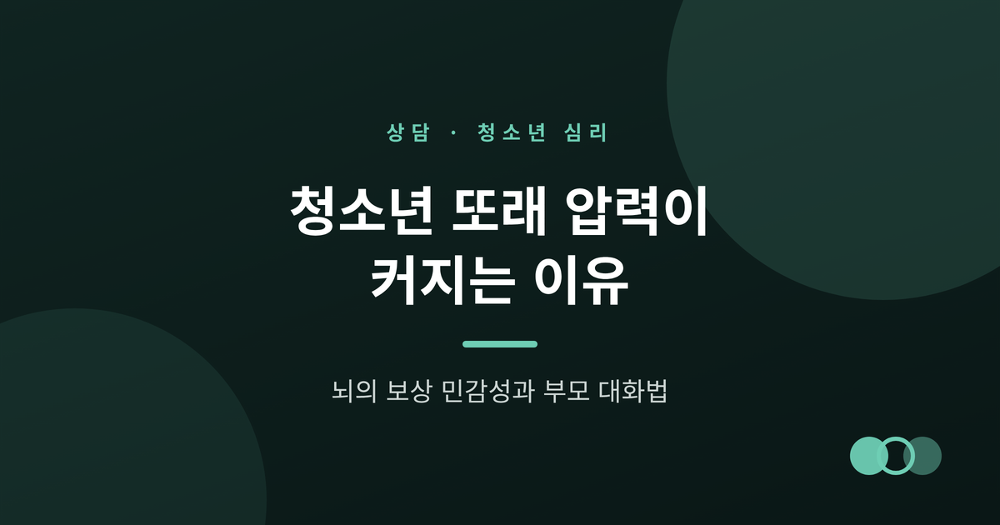
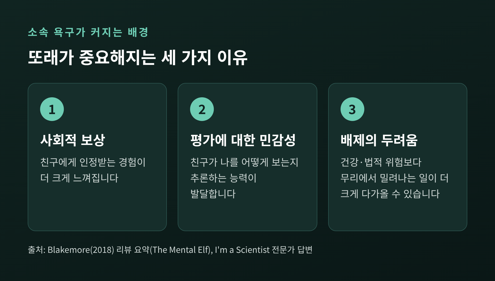
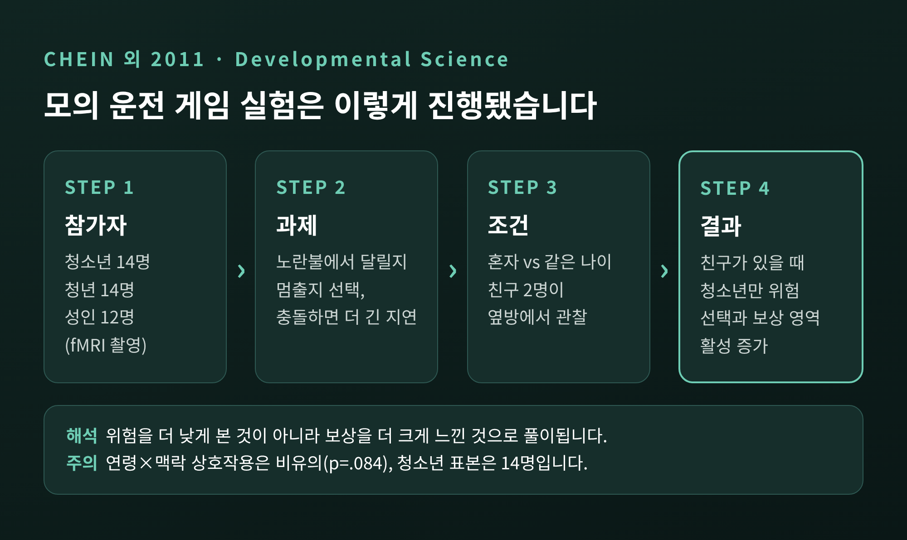
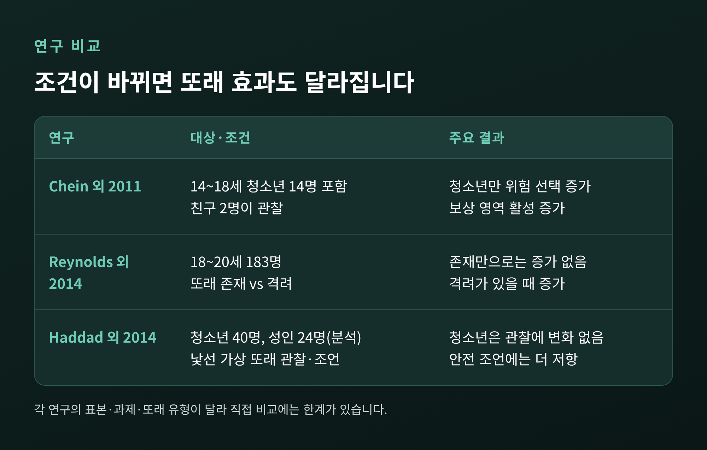
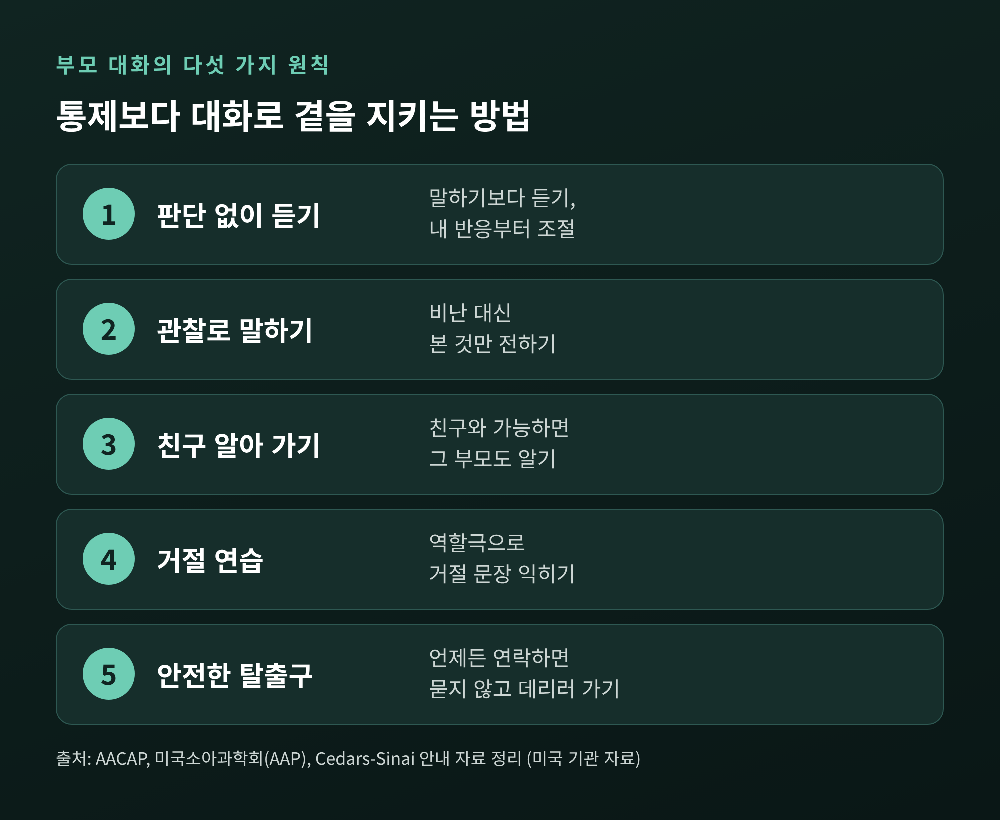
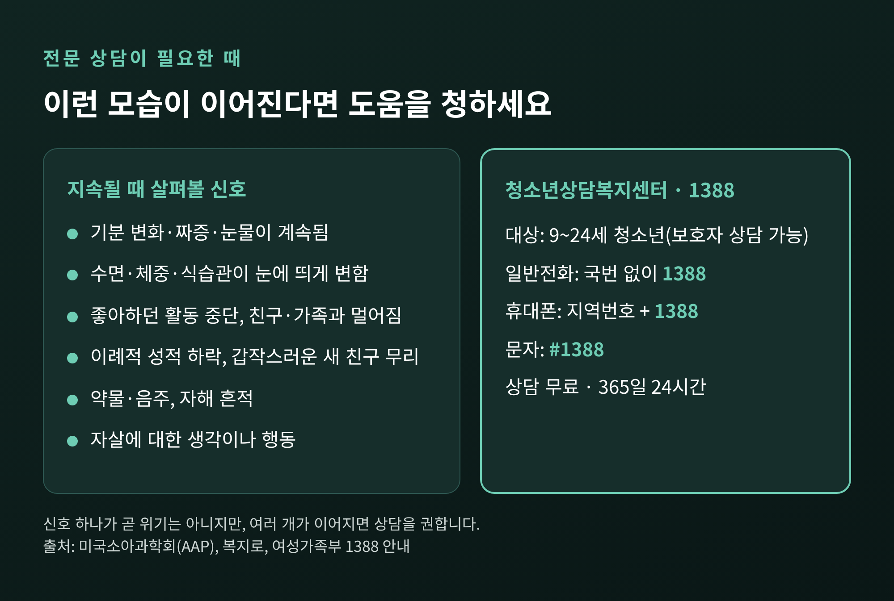

오늘은 청소년의 또래 압력과 소속 욕구에 대해 이야기해 보려 합니다. 청소년기에는 친구가 곁에 있을 때 위험한 선택의 보상이 더 크게 느껴진다는 연구가 있고, 부모는 통제보다 대화로 곁을 지키는 편이 현실적입니다. 다만 대화만으로 닿지 않는 지점도 있어, 그 한계까지 함께 정리했습니다.
먼저 세 줄 요약
아동기에 부모가 세상의 중심이었다면, 청소년기에는 또래가 그 자리를 나눠 갖습니다. 한 전문가는 이를 "사회적 재편"이라고 설명합니다. 사춘기 호르몬 변화와 관련이 있을 수 있고, 또래가 더 강한 동기 부여자가 된다는 것입니다. 독립을 준비하며 사회적 관계를 연습하는 시기이기도 합니다.
소속 욕구가 커지는 배경은 크게 세 가지로 볼 수 있습니다. 하나는 사회적 보상, 곧 친구에게 인정받는 경험이 더 크게 느껴지는 것입니다. 또 하나는 사회적 평가에 대한 예민함입니다. 친구가 나를 어떻게 볼지 추론하는 능력이 발달하면서 시선에 더 민감해집니다. 마지막은 배제에 대한 두려움입니다. Blakemore의 2018년 리뷰는 청소년에게 사회적 배제의 두려움이 건강이나 법적 위험보다 크게 작용할 수 있다고 소개합니다.
한국 자료에서도 이런 흐름이 엿보입니다. 2014년 청소년통계에서 고민 상담 대상은 친구·동료가 46.2%, 부모가 26%였습니다. 오래된 조사이긴 합니다. 2025년 한국청소년상담복지개발원 조사(15~24세 441명)에서는 가장 큰 스트레스로 학업 39.9%, 진로 24.9%에 이어 친구관계가 10.2%로 나타났습니다. 이 수치들이 또래 압력을 직접 잰 것은 아니라는 점은 밝혀 둡니다.

이 주제에서 가장 자주 인용되는 실험이 Temple 대학 Chein 연구팀의 2011년 연구입니다. 참가자는 청소년 14명(14~18세), 청년 14명(19~22세), 성인 12명(24~29세)이었습니다. 모의 운전 게임에서 노란불을 만나면 그대로 달릴지, 멈출지를 고릅니다. 달리면 빠르게 보상을 얻지만 충돌하면 더 오래 지연됩니다. 일부 라운드에서는 같은 나이의 친구 두 명이 옆방에서 지켜봤습니다.
결과는 이렇습니다. 혼자 할 때는 연령 집단 간 차이가 크지 않았습니다. 친구가 지켜볼 때는 청소년만 달리는 선택과 충돌이 유의하게 늘었습니다. 뇌 영상에서도 청소년만 보상 처리와 관련된 복측 선조체와 안와전두피질의 활성이 높아졌습니다. 반면 판단과 자기통제에 관여하는 외측 전전두피질의 차이는 친구의 유무와 무관했습니다.
연구진의 해석은 분명합니다. 친구가 위험 판단을 흐리게 하는 것이 아니라, 위험한 선택으로 얻는 보상을 더 크게 느끼게 한다는 것입니다. 또 실험 속 친구는 압박하지 않았습니다. 곁에 있었을 뿐입니다.
확률을 알려 주면 해결될까요. 2014년 Smith, Chein, Steinberg의 연구에서는 이긴 확률과 질 확률을 모두 알려 준 도박 과제에서도, 익명의 또래가 지켜본다고 믿은 15~17세가 혼자 한 경우보다 더 자주 도박했습니다. 손실 가능성이 큰 베팅에서 그 차이가 두드러졌습니다. 위험을 몰라서가 아니라는 뜻입니다.
한계도 있습니다. Chein 연구에서 연령과 사회적 맥락의 상호작용은 통계적으로 유의하지 않았습니다(p=.084). "청소년에게서만 나타났다"는 집단별 결과이지, 연령 차이가 확정되었다는 뜻은 아닙니다. 표본도 청소년 14명으로 작습니다. 2014년 연구 역시 또래가 녹음된 가상의 존재였고, 확률별 패턴은 탐색적 결과로 다뤄졌습니다.
배경으로는 뇌 발달이 거론됩니다. 판단을 맡는 전전두엽과 정서 중추의 연결은 늦게 성숙하는 부분에 속하고, 보상 회로도 청소년기에 발달 중이라고 합니다. 하버드 헬스 자료는 이 불균등 발달 관점이 확정된 설명이 아니라 비교적 새로운 이론이라고 밝힙니다.

"친구가 있으면 무조건 위험해진다"고 정리하면 틀립니다. 조건에 따라 결과가 갈렸기 때문입니다.
2014년 Reynolds 연구는 18~20세 183명을 대상으로 풍선 과제를 했습니다. 또래의 존재만으로는 위험 선택이 유의하게 늘지 않았고, 또래가 격려할 때 늘었습니다. 같은 해 Haddad 연구에서는 낯선 가상 또래가 지켜볼 때 청소년의 선택이 혼자일 때와 달라지지 않았고, 성인이 오히려 더 신중해졌습니다. 다만 청소년은 "안전하게 하라"는 조언에 성인보다 더 저항했습니다.
정리하면, 곁에 있는 친구가 누구인지, 지켜보는지 부추기는지, 어떤 과제인지, 몇 살인지에 따라 효과가 달라집니다. 실험실의 과제가 현실의 교우 관계를 그대로 대변하지도 않습니다.
또래의 영향은 한쪽 방향만도 아닙니다. 미국소아청소년정신의학회(AACAP)는 친구가 서로를 지지하고, 새로운 취미와 기술에 관심을 일으킬 수 있다고 안내합니다. 반대로 결석, 커닝, 약물이나 음주로 이끌 수도 있습니다. 약 500명을 추적한 미국의 종단연구에서는 친사회적 또래와 어울릴수록 친사회적 행동이, 비행 또래와 어울릴수록 물질 사용이 많았습니다. 결국 친구를 없애는 것이 답이 아니라, 어떤 관계 안에 있는지가 중요합니다.

아래 내용은 AACAP, 미국소아과학회(AAP), 병원 안내 자료에서 공통으로 제시되는 원칙을 정리한 것입니다. 모두 미국 기관 자료이고, 대화법의 효과를 비교한 시험 수치는 확인하지 못했습니다. 한국 가정에 그대로 맞는다고 단정할 수는 없습니다. 참고할 가치가 있는 원칙으로 보시면 좋겠습니다.
첫째, 판단하지 않고 듣습니다. 무엇을 말해도 훈계나 처벌로 이어지지 않는다는 믿음을 먼저 만들어야 합니다. 듣는 시간을 말하는 시간보다 길게 두고, 내 반응부터 가라앉힙니다. 대답이 없다면 며칠 뒤 다시 시도하는 편이 낫습니다.
둘째, 비난 대신 관찰로 말합니다. 가상의 사례를 들어 보겠습니다. 중학생 자녀가 단체 채팅방에서 빠지는 것을 극도로 불안해한다고 해 보겠습니다. "그 애들이랑 그만 놀아"라고 하면 닫힙니다. "요즘 휴대폰을 계속 확인하는 것 같아서 걱정이 됐어"처럼 본 것만 말하면 문이 열려 있습니다.
셋째, 친구를 알아 갑니다. 자녀의 친구와 가능하면 그 부모와도 알고 지냅니다. 병원 안내 자료는 친구들이 흡연, 음주, 절도를 피하면 아이도 덜 한다고 설명합니다. 온라인에서의 교류도 감시가 아니라 대화의 소재로 삼는 쪽이 낫습니다.
넷째, 거절을 연습합니다. 역할극으로 거절 문장을 미리 입에 붙입니다. 수줍은 아이에게는 "아니, 괜찮아" 같은 정중한 퇴장 문구가, 외향적인 아이에게는 더 단호한 문구가 맞습니다. 압력에 저항하는 친구가 한 명만 있어도 도움이 된다는 안내도 있습니다.
다섯째, 안전한 탈출구를 약속합니다. 위험하다고 느끼면 언제든 연락하고, 이유를 묻지 않고 데리러 가겠다는 약속입니다. 거절이 어려운 순간에 "부모님이 오라셔서"라고 말할 수 있는 핑계를 부모가 만들어 주는 셈입니다.
이 모든 바탕에는 자존감이 있습니다. 스스로를 좋게 보는 아이는 덜 흔들린다고 합니다. 그리고 부모가 먼저 자신을 존중하는 모습을 보여 주는 것이 가장 오래가는 모범이라고 안내됩니다.
부모의 영향이 어떤 경로로 닿는지도 참고할 만합니다. 약 500명을 6회에 걸쳐 추적한 연구에서, 초기 청소년기에 부모가 따뜻할수록 1년 뒤 자기조절이 좋아졌고, 자기조절은 이후의 친구 선택과 이어졌습니다. 부모의 영향이 친구 선택으로 이어지는 간접 경로라는 이야기입니다. 연관성을 본 연구이므로 인과로 읽으면 안 됩니다.

솔직히 말씀드리면, 부모가 또래의 영향을 없앨 수는 없습니다. 확률을 알려 줘도 친구 앞에서는 위험을 택할 수 있다는 결과, 안전하라는 조언에 청소년이 더 저항했다는 결과는 훈계와 정보만으로는 한계가 있음을 시사합니다. 후기 청소년기의 행동에는 부모보다 또래가 더 직접 연결되어 있다는 종단연구 결과도 있습니다. 부모가 잘못해서가 아닙니다. 발달의 모습이 그렇습니다.
다음과 같은 모습이 지속된다면 대화를 넘어 전문가의 도움을 생각해 보시길 권합니다. 이는 미국소아과학회가 정리한 위험 신호에서 가져온 것입니다.
신호 하나가 곧 위기를 뜻하지는 않습니다. 하지만 여러 신호가 이어진다면 마음의 건강에 대해 이야기를 꺼내야 할 때입니다. 자살에 대한 생각이나 행동은 어떤 경우에도 가볍게 넘기지 않아야 합니다.
한국에는 청소년상담복지센터가 있습니다. 9~24세 청소년을 대상으로 학업, 진로, 친구관계, 가족 문제, 학교폭력 등을 상담하고, 개인상담과 집단상담, 심리상담, 예술치료를 제공합니다. 청소년 전화 1388은 여성가족부 안내 기준으로 상담과 통화 요금이 무료이고, 365일 24시간 운영되며, 문자(#1388)로도 이용할 수 있습니다. 청소년 문제로 고민하는 보호자도 이용 대상에 포함됩니다. 전화는 일반전화는 국번 없이 1388, 휴대폰은 지역번호와 1388을 누르시면 됩니다. 학교 상담교사나 가정의에게 먼저 상의하는 길도 있습니다.

정리하면 이렇습니다. 청소년기의 또래 압력은 의지가 약해서가 아니라, 소속과 인정에 대한 욕구와 아직 자라는 뇌의 보상 반응이 겹친 결과로 이해하는 편이 정확합니다.
"영향을 없애려 하기보다, 그 영향을 함께 이야기할 수 있는 어른으로 남는다." 부모가 할 수 있는 일의 핵심은 이 한 줄에 가깝다고 생각합니다.
그래도 혼자 감당하기 어렵다면, 그것은 부족함이 아니라 도움을 청할 때가 되었다는 신호입니다. 자녀가 위험한 행동, 지속적인 우울이나 고립, 자해나 극단적 생각을 보이거나 학교폭력 같은 위기에 놓였다면 지체하지 말고 청소년상담복지센터(1388)나 학교 상담교사, 전문 의료기관에 상담을 요청하시길 권합니다. 이 글의 사례는 이해를 돕기 위한 일반화된 예시이며, 개별 상황의 진단이나 치료를 대신하지 않습니다.
곁에서 묻는 일이 가장 어렵고, 가장 오래 남습니다.